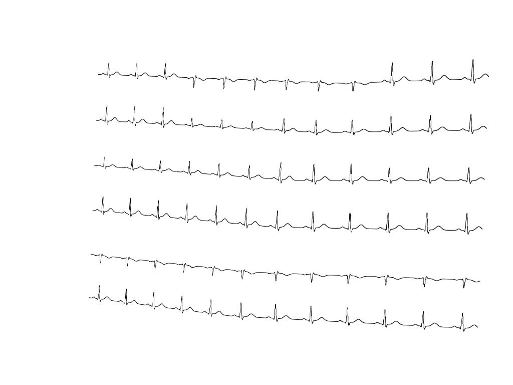

Start here
Quickstart
Start with a complete, artificial signal so you can focus on the interface. For your own data, pass voltages in mV and the real sample rate.
Render RGB#
import torch
from ecg_gpu import ECGImageLayer, RenderConfig
from ecg_gpu.demo import demo_signals
device = torch.device("cuda" if torch.cuda.is_available() else "cpu")
values, fs, _ = demo_signals(fs=500, duration=10)
signals = torch.tensor(values, dtype=torch.float32, device=device)[None]
render = ECGImageLayer(
fs=fs,
config=RenderConfig(height=384, width=512),
parameters={"layout": "3x4+r1", "quarter": 0},
seed=1973,
).to(device)
image = render(signals) # [1,3,384,512], float32, [0,1]
The module changes capture parameters on successive training calls. Use .eval() for a repeated capture seed or randomize=False to repeat it in both modes.
Render input and target together#
from ecg_gpu import ECGSupervisionLayer, SupervisionConfig
synth = ECGSupervisionLayer(
fs=fs,
config=RenderConfig(height=384, width=512),
supervision=SupervisionConfig(
outputs=("lead_masks", "bw", "wb", "lead_boxes", "instance_boxes")
),
).to(device)
batch = synth(signals)
rgb = batch["image"] # [B,3,H,W]
masks = batch["lead_masks"] # [B,12,H,W]
bw = batch["bw"] # [B,1,H,W], white paper / black traces
wb = batch["wb"] # [B,1,H,W], black paper / white traces
boxes = batch["lead_boxes"] # [B,12,4], xyxy pixel edges

The auxiliary views contain the trace coverage only. Grid, text, calibration pulses, shadows and the table are excluded. Read advanced supervision for visibility, channel order and repeated rhythm strips.
Write a file with the CLI#
Create a signal file from the artificial example:
import numpy as np
np.savez("signal.npz", signals=values, fs=fs, units="mV")
ecg-render --input signal.npz --output ecg.png \
--layout 3x4+r3 --height 768 --width 1024 \
--targets-dir targets --metadata capture.json
The advanced export includes targets.npz, boxes.json and lossless grayscale BW/WB PNGs. Encoding and writing happen after rendering, outside the training loop.